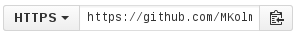
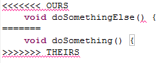

Osnove¶
Clone¶
Prva stvar, ki se jo bomo naučili je kloniranje repozitorija iz spleta na lokalno napravo. Kloniranje je nekaj kar moraš storiti zgolj enkrat na vsaki napravi, kjer želiš urejati repozitorij. S tem dobiš vso kodo in nastavitve repozitorija. Najprej skopiraj URL repozitorija, ki ga želiš klonirati. To lahko storiš njegovi strani, kjer lahko vidiš takšno polje
Sedaj zaženi git-cmd.exe iz svoje namestitve git-a. S pomočjo ukaza cd se premakni do željene lokacije na disku, kamor želiš shraniti svoj repozitorij. Tam zaženi git clone <url>, kamor vneseš URL svojega repozitorija.To bo ustvarilo novo mapo z imenom enakim repozitoriju in vanj preneslo vso kodo, ki je že na strani.
Add in Commit¶
Glavna ukaza za shranjevanje sprememb sta add in commit. Ukaz commit naredi novo točko pri razvoju kode. To pomeni, da lahko spremembe v kodi commitaš in potem bo trenutna verzija kode shranjena tudi, ko boš v novejših verzijah projekta. Tako lahko vedno pogledaš zgodovino sprememb, ko rezimo iščeš od kje je prišla kakšna napaka.
Z ukazom add pa povemo katere datoteke želimo commitat. Saj je pametno, da so vse spremembe v enem commitu povezane. Vsak commit mora imeti tudi commit message, ki na kratko razloži kaj smo spremenili s tem commitom.
Primer¶
Recimo, da imamo projekt kjer smo od zadnjega commita spremenili naslednje datoteke. V mapi images smo izboljšali kvaliteto slika1.jpg in ozadje.png. Poleg tega pa smo v datoteki main.py odpravili hrošča zaradi katerega je lahko naš junak skakal skozi stene.
Odločimo se, da bomo to spravili v dva commita. Najprej se lotimo slik:
git add img/slika1.jpg img/ozadje.png
git commit -m "Izboljsana kvaliteta slik"
Najprej smo dodali obe datoteki v t.i. staging. Nato pa ukaz git commit za stalno zapiše spremembe v repozitorij. Zastavica -m "Sporocilo poda sporočilo commita. Enako zapišemo še commit za drugi del sprememb:
git add main.py
git commit -m "Skakanje skozi zid Bug fix"
Status in Diff¶
Ker nimamo ves čas v glavi sprememb, ki smo jih naredili v naši kodi sta za to na voljo ukaza git status in git diff. Prvi pove katere datoteke so se spremenile, katere datoteke so povsem nove in katere so pripravljene za commit (v stagingu). Ukaz diff pa nam poda točne spremembe izbrane datoteke. Recimo z git diff main.py bomo videli katere vrstice smo spremenili od zadnjega commita.
Push in Pull¶
Po tem, ko si naredil enega ali več commitov, lahko le-te pošlješ nazaj v spletni repositorij (npr. na github) s pomočjo ukaza git push. Vpisati boš moral svoje uporabniško ime in geslo, da program preveri ali imaš ustrezne pravice za spreminjanje spletnega repozitorija, nato bo prenesel vse spremembe na splet. Ampak pazi, če so na spletu kakšni commiti, ki jih ti še nimaš na svojem računalniku moraš najprej te prenesti k sebi. Takrat lahko dobiš sporočilo kot je prikazano na spodnji sliki. Za to uporabiš git pull.

Ko se spremeni vsebina repozitorija na spletu in si želiš prenesti zadnjo verzijo kode, to narediš z ukazom git pull. Včasih se zgodi, da je več ljudi spreminjalo enake dele kode in takrat dobiš konflikt v kodi. Več o tem v svojem poglavju.
Konflikti¶
Če sta dva uporabnika hkrati urejala isto datoteko lahko naletimo na merge conflict. To pomeni, da git ni znal sam združiti sprememb različnih uporabnikov in moramo to storiti sami. Git nam ponudi naslednje sporočilo, ki nam pove, da kje je prišlo do konflikta:

Odpremo datoteko in poiščemo problematičen del kode, ki nam jo je git označil z <<<<<<<<, ======== in >>>>>>>>, kot lahko vidimo na sliki
Med prvima dvema znakoma so spremembe, ki smo jih naredili mi, nato pa spremembe, ki smo jih dobili iz spletnega repozitorija in jih je naredil nekdo drug (ali mi na drugi napravi). Za primer vzemimo, da smo imeli problem z datoteko main.py. Sedaj moramo na roko popraviti kodo tako, da bo vse pravilno delovalo, nato pa commitat spremembe z
git add main.py
git commit -m "Odpravljen konflikt v datoteki main"